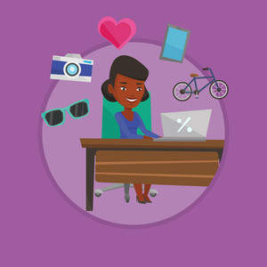

About Me
// Introduction

Hi! My name is Chidera Obinali, a Nigerian-American woman originally from Fayetteville, Georgia. My current job is in consulting, but my next job will be back in the tech industry as a Digital Designer. I also have dreams of being financially independent before the age of 40, but that's a goal to discuss another day. 😉 The roles I'm interested in fall under the UI (User Interface) and UX (User Experience) umbrella within the tech space. The two are similar in the fact that they both have a hand in a user's interaction with a product; however, the differences is in which part of the product they have a hand in. UI can deal with traditional concepts like visual design elements such as color, branding, and typography whereas UX can deal with concepts such as wireframes, user research, information architecture and even storytelling. In fact, some companies have employees who do both jobs but it's important not to see them as the same job. My dream is to do just that as the author who can also illustrate their story.
Discovering Design
// How I Got Into Web/UI Design
 Back in Middle School, I, like many kids, made playing online games a priority in my life especially the ones that allow multiplayers. For me, my number one site was Neopets. Neopets is a virtual pet site for kids where you could interact with other users on the Neoboards (forums), play games, create personal Web pages, send Neomail, and lots more. My friends and I bonded over our designs and the desire to create. We made designs for Pet-owned Web Pages, Logos, Buttons, User Profiles, Guilds (Example 1, Example 2) and anything else the founders sandboxed for us kids to work in. It was then I realized how much joy it brought me and considered a career in Web Design. Well, a year afterwards. My brother introduced the career to me first after seeing my work, but I doubted him since it wasn't a highly marketed career like an Engineer or Doctor. I went on to discover more about web designing, programming, and graphic design. While being a consultant allows me travel and feel comfortable since I can do the job, I'm becoming ready to risk what I have to become a designer since it would bring me much more happiness.
Back in Middle School, I, like many kids, made playing online games a priority in my life especially the ones that allow multiplayers. For me, my number one site was Neopets. Neopets is a virtual pet site for kids where you could interact with other users on the Neoboards (forums), play games, create personal Web pages, send Neomail, and lots more. My friends and I bonded over our designs and the desire to create. We made designs for Pet-owned Web Pages, Logos, Buttons, User Profiles, Guilds (Example 1, Example 2) and anything else the founders sandboxed for us kids to work in. It was then I realized how much joy it brought me and considered a career in Web Design. Well, a year afterwards. My brother introduced the career to me first after seeing my work, but I doubted him since it wasn't a highly marketed career like an Engineer or Doctor. I went on to discover more about web designing, programming, and graphic design. While being a consultant allows me travel and feel comfortable since I can do the job, I'm becoming ready to risk what I have to become a designer since it would bring me much more happiness.
Current State
// My Current Skills and Career
Since my introduction to design, I've learned several design tools and programming languages. My talents are housed in Adobe XD, Photoshop, and illustrator where as my programming fluency is in front-end languages (i.e. HTML, Javascript, and CSS). My portfolio hasn't grown much since the start of my consulting career due to the transitional period and travel. I doodle and review designs on Dribbble regularly to keep my creative thoughts active, but the amount of time spent doing that could definitely increase. Consulting doesn't feed into my creative diet, but it has taught me so much from a business aspect: presentating, overseeing different clients simetaneously, corporate politics, etc. While it's not where I'm meant to be, I am so grateful for the experience I've obtained. I feel as though I'm better equipped mentally for any upgrades to my life (e.g. career, home ownership, friendships).
Future State
// My Future Skills and Career Goals
 In the future, I imagine myself working as a full-time UI Designer at a company that supports individual career-advancement (school, conferences, training/certficates, etc.) with 3-5 side hustles. Those hustles can range from being a User Tester to day trading to freelance work under my company, codesignr LLC. I would like to spend my personal time as a web designer and digital content creator for other brands giving me an outlet to apply what I learn in my full-time role. In my spare time, I would start a doodle series featuring cute, plump characters and objects inspired by my daily interactions. No dreams of being a full-fledge company or comic artist yet, but the idea is not opposed. Outside of careers/work, I'd like to be more involved in the design community and share my knowledge as a speaker and mentor. Mentorship is not unfamiliar to me, but the weight of it sits differently now that I am older. Compared to my college mentoring days, I want to be more than a "occasional" resource and really commit to my future students/mentees. That commitment includes better listening skills and serving them wholeheartedly rather than as a extracirricular activity. I have developed a large series of poor habits that hold me back from achieving my full potential. I am ready to start my new career, but fear and complacency is holding me back. I hope to change that mindset through the new information and networks I'm bringing into my corner.
In the future, I imagine myself working as a full-time UI Designer at a company that supports individual career-advancement (school, conferences, training/certficates, etc.) with 3-5 side hustles. Those hustles can range from being a User Tester to day trading to freelance work under my company, codesignr LLC. I would like to spend my personal time as a web designer and digital content creator for other brands giving me an outlet to apply what I learn in my full-time role. In my spare time, I would start a doodle series featuring cute, plump characters and objects inspired by my daily interactions. No dreams of being a full-fledge company or comic artist yet, but the idea is not opposed. Outside of careers/work, I'd like to be more involved in the design community and share my knowledge as a speaker and mentor. Mentorship is not unfamiliar to me, but the weight of it sits differently now that I am older. Compared to my college mentoring days, I want to be more than a "occasional" resource and really commit to my future students/mentees. That commitment includes better listening skills and serving them wholeheartedly rather than as a extracirricular activity. I have developed a large series of poor habits that hold me back from achieving my full potential. I am ready to start my new career, but fear and complacency is holding me back. I hope to change that mindset through the new information and networks I'm bringing into my corner.
Build Status
// What I'm Doing Now to Get There
As mentioned before, I need to step outside my comfort zone and expose myself to the new information starting with the basics again. I joined the LC101 Web Development program to refresh my knowledge on standards and reignite my passion. I reorganized my social media followings to digest information related to my goals on a regular basis. YouTube channels, admired freelance designers, content creators, brand specialists, etc. I also unfollowed content that didn't feed into me such as posts from gossip columns like TheShadeRoom, friends of a friend's friend, duplicate "aesthetic" pages, etc. I'm creating personal projects that could showcase my growing skillset and seeking help from those who are more experienced.
Created by Chidera Obinali © Spring 2020
Images used are from Storyblocks.